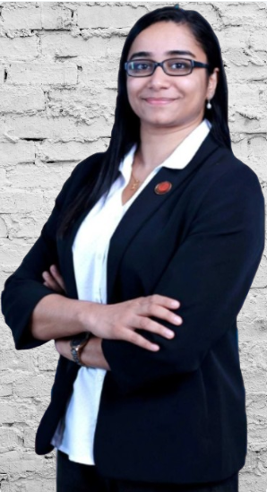

| About Dr. Kanchana | |
Dr. Kanchana S Pillai is a
Neurologist and Movement Disorders Specialist
practising in Mumbai having over 6 years of
experience in her specialty. She is specialized
in the diagnosis and treatment of Neurological
disorders.
She has passed MBBS from King Edward Memorial (KEM) Hospital and Seth Gordhandas Sunderdas Medical College(GSMC), Parel, Mumbai and MD (General Medicine) from Lokmanya Tilak Municipal General Hospital (LTMGH) and Lokmanya Tilak Municipal Medical College (LTMMC), Sion, Mumbai. After completion of MD she has passed DM (Neurology) from All India Institute of Medical Sciences (AIIMS), New Delhi, the centre of excellence in the medical sciences in India. She has also completed the Post-Doctoral Fellowship in Movement Disorders from Aster Medcity Hospital, Kochi under the guidance of Dr. Asha Kishore, former Senior Professor in Neurology, Head of the Comprehensive Care Centre for Movement Disorders, Director of the Sree Chitra Tirunal Institute of Medical Sciences and Technology, Trivandrum and currently President Movement Disorders Society of India. She also served as specialty Medical Officer at Lokmanya Tilak Municipal General Hospital, Sion in the Department of Neurology. Currently she is a Consultant Neurologist and Movement Disorder Specialist at Bombay Hospital and Medical Research Centre, Mumbai. She has published numerous papers in national and international Journals, written book chapters and also presented papers in various international conferences. |
 |